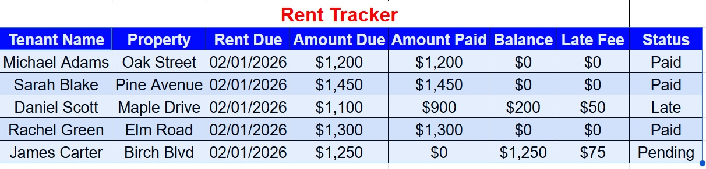
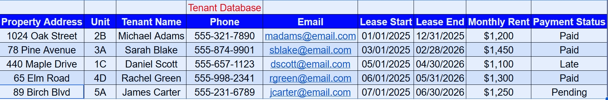
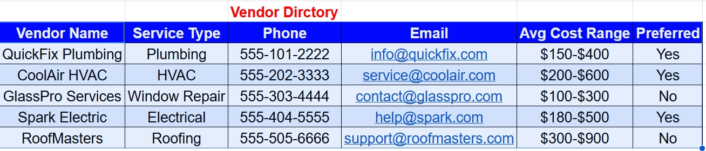
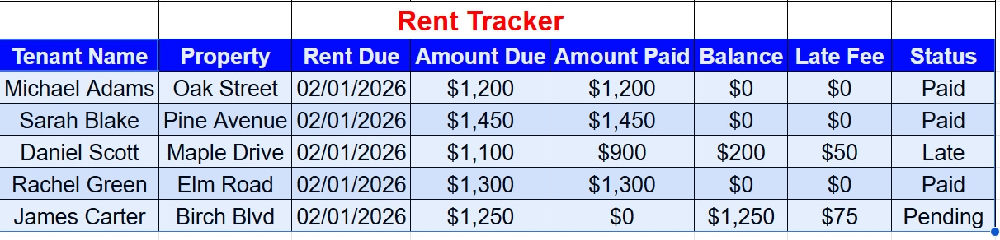
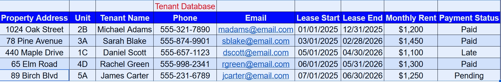
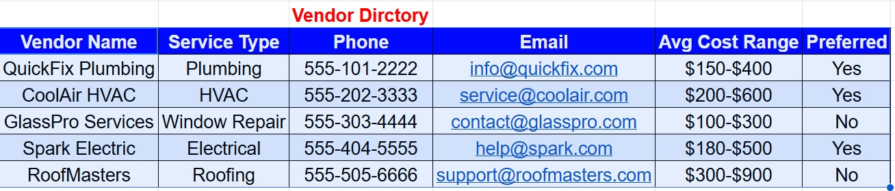
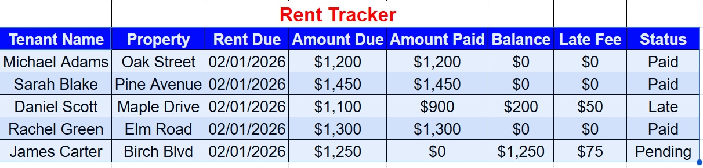
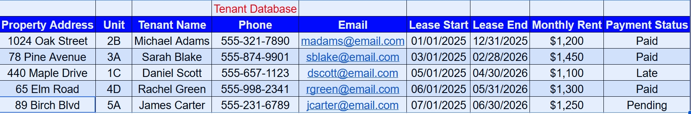
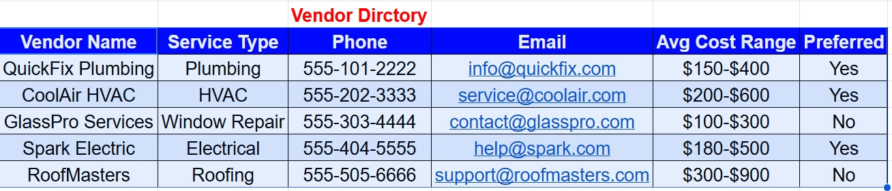

System Preview
 





Property Management Virtual Assistant specializing in tenant communication, rent tracking, maintenance coordination, and operational reporting.
This Property Management Operations System demonstrates structured tenant tracking, rent monitoring, maintenance coordination, vendor management, and reporting for landlords and property managers.



If you're managing multiple rental units and need structured backend systems to reduce missed payments, eliminate communication gaps, and prevent delayed repairs, I provide organized operational support that keeps your portfolio running efficiently.